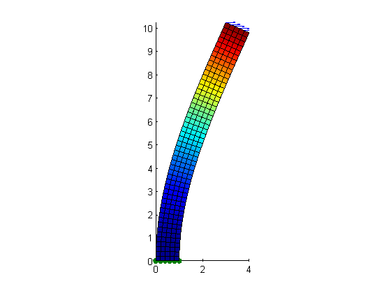

Contents
%-------------------------------------------------------------------------- %Program: Structure2D %Description: Structural static eq solver in 2D for square elements. %Version: 2.0 %Author: Ilyas Ramdzan %Last Updated: 30/11/16 %Requirements: elem.txt nodes.txt facefixed.txt faceloaded.txt %--------------------------------------------------------------------------
initialize program
% Clear workspace and command window clear; clc; tic disp([datestr(now),' START STATIC']) fprintf(' Runtime \n') % Import nodes and elements information nodes=load('nodes.txt');%file containing node coordinates elem=load('elem.txt'); %file containing element connectivity information [num_nodes,dimension]=size(nodes); [num_elem,order_elem]=size(elem); fprintf('%8.2f Files loaded. %d Nodes. %d Elements \n',toc,num_nodes,num_elem) % Initialize matrices coord=zeros(4,dimension); %local coordinates for 2D square n=num_nodes*dimension; Km=zeros(n,n); % global stiffness matrix Mm=zeros(n,n); % global mass matrix
30-Nov-2016 11:10:30 START STATIC
Runtime
0.09 Files loaded. 306 Nodes. 250 Elements
Generating the Stiffness Matrix [Km] and Mass Matrix [Mm]
fprintf('%8.2f Compute stiffness matrix and mass matrix \n',toc) for elemnum=1:num_elem;
% gather local coordinate matrix for nodenum=1:4; % local node number coord(nodenum,:)=nodes(elem(elemnum,nodenum),:); end ng=3; %number of gauss point for integration through the legendre quadrature xg=zeros(3,3); wg=zeros(3,3); % gauss points and weights, the first index denotes the current gauss % point while the second index is the total number of integration % points xg(1,1)=0; wg(1,1)=2; xg(1,2)=-0.5773502691896; xg(2,2)=+0.5773502691896; wg(1,2)=1; wg(2,2)=1; xg(1,3)=-0.7745966692415; xg(2,3)=0; xg(3,3)=+0.7745966692415; wg(1,3)=0.5555555555555; wg(2,3)=0.8888888888888; wg(3,3)=0.5555555555555; % loop for every gauss point i,j,k represent the indices for the gauss % points km=zeros(8,8); for i=1:ng; for j=1:ng;
% a matrix of derivatives of shape function w.r.t local axis % taken at the gauss points der=0.25*[... -(1-xg(j,ng)), -(1+xg(j,ng)),(1+xg(j,ng)), (1-xg(j,ng));... -(1-xg(i,ng)), (1-xg(i,ng)),(1+xg(i,ng)), -(1+xg(i,ng))]; jac= der*coord; % jacobian of the transformation matrix detjac=det(jac); % determinant of the jacobian deriv=jac\der;% a matrix of derivatives of the shape function w.r.t to global coordinates
[B] matrix
computing the [B] matrix by assembling the derivatives for 2D rectangular elements
B=zeros(3,8);
for m=1:4;
n=2*m-1;
B(1,n)=deriv(1,m);
B(2,n+1)=deriv(2,m);
B(3,n)=deriv(2,m);
B(3,n+1)=deriv(1,m);
end
Material Matrix [D]
compute the stress-strain relationship matrix, otherwise known as the material matrix.
E=7e7; % young's modulus nu=0.3; % poisson's ratio rho=7800; %density, required for mass matrix % for plane strain c1=(E*(1-nu))/((1+nu)*(1-2*nu)); c2=nu/(1-nu); c3=(1-2*nu)/(2*(1-nu)); D=c1.*[... 1, c2, 0;... c2, 1, 0;... 0, 0, c3];
[B]'[D][B]dxdydz
compute the sum of the integrands at all the gauss points
BtDB=B'*D*B;
km=km+detjac*wg(i,ng)*wg(j,ng)*BtDB;
end end
assemble the global stiffness matrix [Km]
for i=1:4 localnum1=i*2; globalnum1=elem(elemnum,i)*2; for j=1:4 localnum2=j*2; globalnum2=elem(elemnum,j)*2; Km(globalnum1-1:globalnum1,globalnum2-1:globalnum2)=... Km(globalnum1-1:globalnum1,globalnum2-1:globalnum2)+... km(localnum1-1:localnum1,localnum2-1:localnum2); end end
end
0.25 Compute stiffness matrix and mass matrix
Loads
constructing the force matrix
fprintf('%8.2f Applying loads \n',toc) F=zeros(num_nodes*2,1); Fx=zeros(num_nodes,1); Fy=zeros(num_nodes,1); %the load applied loaded=load('faceloaded.txt'); Fx(loaded)=1/numel(loaded); Fy(loaded)=0; for i=loaded; F(i*2-1)=Fx(i); F(i*2)=Fy(i); end
87.18 Applying loads
Boundary Conditions
apply displacement constraint=0 for bottom nodes
fprintf('%8.2f Applying constraints \n',toc) fixed=load('facefixed.txt'); % add the node number of fixed nodes here trimvector=zeros((num_nodes-numel(fixed))*2,1); trimcounter=0; for i=1:num_nodes if any(i==fixed) continue end trimcounter=trimcounter+1; trimvector(trimcounter*2-1:trimcounter*2)=(i*2-1):i*2; end Km=Km(trimvector,trimvector); F=F(trimvector); %Mm=Mm(trimvector,trimvector); fprintf('%8.2f Number of equations = %d \n',toc,length(trimvector))
87.19 Applying constraints 87.19 Number of equations = 600
solve [K]{U}={F} for static case
currently using full inverse matrix computation. other methods should be considered if given enough time
fprintf('%8.2f Solving [K]{u}={F} \n',toc) U=Km\F; % sorting the computed displacements into a matrix of x y coordinates dis=zeros(num_nodes,dimension); count=0; for i=1:num_nodes; if any(i==fixed) % skip the boundary condition nodes count=count+1; continue end dis(i,:)=U(2*(i-count)-1:2*(i-count))'; end dis_mag=sqrt(dis(:,1).^2+dis(:,2).^2); % for patch colour vis_scale=0.3*max(max(nodes)); % visualization scale if max(max(abs(dis)))==0; dis_scaled=dis; else dis_scaled=dis*vis_scale/max(max(abs(dis))); end displaced=dis_scaled+nodes;
87.20 Solving [K]{u}={F}
Visualization
fprintf('%8.2f Processing plot \n',toc) % create displacement plot x=zeros(num_elem,4); y=zeros(num_elem,4); c=zeros(num_elem,4); for elemnum=1:num_elem; x(elemnum,:)=displaced(elem(elemnum,:),1); y(elemnum,:)=displaced(elem(elemnum,:),2); c(elemnum,:)=dis_mag(elem(elemnum,:)); end figure hold on patch(x',y',c') % adjust plot daspect([1,1,1]) xlim([min(displaced(:,1)) max(displaced(:,1))]) ylim([min(displaced(:,2)) max(displaced(:,2))]) % load arrow vector icon and fixed constraint icon quiver(displaced(loaded,1),displaced(loaded,2),Fx(loaded),Fy(loaded)) scatter(displaced(fixed,1),displaced(fixed,2),'filled')
87.21 Processing plot
compare to theory
format long I=max(nodes(:,1))^3*1/12; L=max(nodes(:,2)); calc=abs(1*L^3/(3*E*I)); code=max(abs(dis(:,1))); pcterr=(calc-code)*100/calc; fprintf('handcalc code pcterror \n') fprintf('%8.6f %8.6f %8.6f \n',calc,code,pcterr) fprintf('%8.2f FINISH \n',toc)
handcalc code pcterror 0.000057 0.000051 10.751025 89.64 FINISH